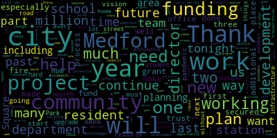
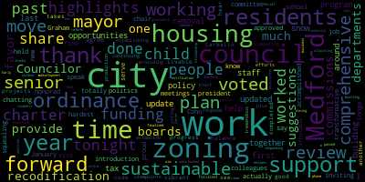

[SPEAKER_05]: It's.
[SPEAKER_02]: Thank you. Thank you. Yeah. Okay.
[Lungo-Koehn]: My check one, two, my check one, two, one, two.
[SPEAKER_02]: I think that's a good question. It looks like that.
[Lungo-Koehn]: Good evening, everybody. Feel free to have a seat. We're going to get started somewhat on time because we want everybody to get home safe with the weather. And we're trying to keep the program to less than an hour. So thanks for everybody for being here. First up, I want to announce that we have a very special guest to start us off tonight. We have our first ever Poet Laureate, Terry Carter, who's going to read us a poem. Terry is a published author of five books. Currently writing his sixth, which will go to print very soon. He's a huge asset to every part of our community, the schools, the West Memphis Community Center, and the community as a whole with his poetry and so much more. So without further ado, Terry Carter.
[SPEAKER_05]: Must be the welcome committee.
[Carter]: A Medford state of mind. You've been paying attention of this, I am sure. Please know our intentions are tempered and pure. We're looking to make our city work from the mayor's office to the city clerk. We want you to see the accommodations, the bike lanes, parks and subway stations. We want you to see the collaborations of the arts, nonprofits and firm foundations. We want you to watch small business thrive and public health keep folks alive. Progressive moves with a sense of tradition can fire up the engine's ignition as citizens work their issues out and calm replaces the angry shout. real discussions of race and reason, and no dark fears of romancing treason, the new school with data and evidence, the old school promise of common sense. This remains our fondest hope for governance of seasoned scope that meets the needs of every soul, that makes us stronger as a whole, that doesn't take the vote for granted, but honors the seeds our forebears planted. that shines a light on the public trust with solutions that are wise and just. These simple rhymes, by illustration, make this city's declaration. To work together, hand in hand, like a Medford Mustang's marching band. Where workers can negotiate and earn his faith, devoid of hate. Where first responders earn respect, and yes, they always serve and protect. Where builders take a mindful pause to read beyond the contract's clause, to see beyond their drills and saws, to hear the voice of common cause. Where pride's rainbow is fully fled and differences don't find us scared. Where churches worship a kindred peace and faithful followers. kind release, where Black Lives Matter is fundamental and we see all face as kind and gentle, where we raise our children with open eyes and lessons that don't merely sanitize, where teachers can teach and children can learn, and there are no witches or books to burn, where we welcome new folks from every nation, Bengali, Latinx, and Haitian, where innovation courts tradition to form a new improved condition and legacy does a wondrous dance with transformation's bold advance. This is the cry of the city's heart. In this new season, it's where we start. To aim at progress, both sane and smart, that pulls together and not apart. Where social justice resonates, and folks engage in healthy debates, and good food fills each family's plates as neighbors walk through open gates. Now is the time for all to hear a message of unity loud and clear, while others may advocate rage and dissension and do their best to stir up tension. The goal of a trusted administration is clear and transparent communication. In this age of COVID, we still must ask for leaders to safely remove their mask. The state of the city's simple truth is people want to see more proof. That competent leaders steer the ship and have a strong and steady grip. That new ideas are implemented as wisdom pours like wine fermented from history's deep and fermented cast to be dispensed when progress asks. What is the proper and sound solution that leads to perfect execution, that leads away from persecution, that stems the tide of retribution? These simple rhymes, by confirmation, confess our thirst for activation, confess our quest for reclamation of Medford's best cooperation. And so the poet reads the stars like fireflies in clear glass jars to offer a hint at what might be in a hopeful 2023. The mystic tides will twist and bend. But this is Medford's time to mend the broken rails in our civic stairs, the fraying faith in our public affairs. This remains our fondest hope for leadership of seasoned scope that meets the needs of every soul that makes us stronger as a whole. This is my plea, good Medfordite. And now this poet says good night. Thank you. Thank you. Thank you. And now it is my honor. Thank you. And now it's my honor to present the vice chair of the school committee, Jenny Graham.
[Graham]: Good evening, everyone. Thank you Mayor Lungo-Kern for asking me to speak tonight. I am honored to be here and to be the vice chair of the school committee and maybe more honored that the citizens of Medford have imparted their faith on me for nearly four years now. which does feel like a small lifetime for these past four years. When I think about the year in review, it feels like every year in review that I think about since I joined the school committee. And so each year, the school committee works really hard with our school administration to make progress. And each year it's also abundantly clear that there's so much more progress that our students deserve. And so when I think about that, I'm often overwhelmed, but I'm gonna start with some highlights. So this past year, we invested in a lot of curricula at high quality curricula for our students. That's long overdue. This includes textbooks for many high school courses. It includes a new math curriculum for our middle schoolers, and it includes a new math curriculum for our elementary schools. We also have continued at the elementary level to infuse phonics based curricula into our programming, into our literacy programming while we pursue a fuller replacement of our literacy curriculum. That phonics-based approach is so clearly what the science tells us is the way to support all readers and change lives. And so I'm really grateful to the school administration for their tenacity as they have worked to really make a huge shift in the way that teaching and learning is happening at our elementary school level when we talk about the most fundamental thing, which is learning to read. As we look forward, I also am excited to see that we have assembled a group of Medford residents to take a look at our health curriculum and to make sure that in the future, our health curriculum is comprehensive, it's grounded in science and that it works to prevent bullying and violence in our student body. The team that we've assembled is truly amazing. They are so credentialed. I just like can't even believe that all this talent lives right take care in this tiny little space that we call Medford. Beyond all the good work that we are doing on the curriculum side, the other thing that we have spent a lot of time working through and I'm really proud of is the work we've done to bolster our mental health supports for students who are so clearly, as we all are, still thinking about navigating their way out of the pandemic and all the ways that it has affected them. So I'm really pleased that we have been able to bolster those supports and the work that we're doing there is is arduous and super important. This past year was a big one as we negotiated with our 11 bargaining partners. We have 11 labor unions within Medford Public Schools. Through that work, we thanked our teachers for their hard work during the pandemic and beyond, and in the aftermath of it for sure. And we settled the most favorable contract in decades for our teachers, perhaps ever. We also committed that our employees in Medford Public Schools deserve a living wage and we found a way to ensure that our paraprofessionals receive compensation that is not just a living wage, but an incredible step forward for our staff and the students they deserve. We've also settled contacts with nurses, our school secretaries and our carpenters. And we still have work to do to settle our remaining contracts, but we are committed to ensuring that our staff receives a living wage for the service that they provide to our students. I want to thank the Community Preservation Commission for their ongoing support of Medford Public Schools. Most recently, we were able to assemble an advisory committee to look at the replacement of the McGlynn Elementary School playground with their support. The design is stunning. It recognizes that play is learning, which is amazing. And it is the first truly inclusive playground in the city of Medford, or will be. The advisory committee worked really diligently to ensure that we heard from a whole variety of stakeholders. We heard from children, we heard from the teachers in the building, and we heard from the community because that space will be a community space as well. And we were able to come up with a design that centered sustainability, inclusivity, and fun. Thanks to the CPC for their ongoing support. We have commitments to fund construction and to the mayor for dedicating ARPA funds to make that playground a reality. I was proud to serve on that committee, on the advisory committee itself, along with school committee woman, Melanie McLaughlin. And I think it's safe to say the entire school committee can't wait to cut the ribbon on the finished playground. Last year has posed its share of challenges. I am sure you've heard about them all. And I think it's safe to say that no school building has felt more challenged than Medford High School. We took steps in these past few months to ensure that our high school is safe and conducive to learning for all students. Creating a climate and culture that is deserving of Medford's pride is certainly a work in progress, and it's one that we're all committed to. My heart and my work go out to the families that have felt the pain that is our history, and it's because of those voices and because it's the right thing to do that we are taking a deep, hard look at what's going right, and more importantly, what needs to change. I'm committed to making those changes, no matter how hard they are, because our students deserve nothing less. Finally, our high school students also deserve a building that can support modern, cutting-edge education and has ample space for our vocational students. I'm proud of the application that we submitted to the Massachusetts School Building Authority this past year, and was disheartened to learn that we weren't invited to the next step, mainly due to skyrocketing costs in building projects, school building projects across the state. I'm calling on our state delegation to do everything that they can to make sure that we increase funding at the state level to the MSBA next year and for the years to come. And I'm excited to announce that we will resubmit our application in April, with additions as outlined and recommended by the building authority, and that we will also begin discussions on what other options we may have and start to explore how we move forward in rebuilding or replacing Medford High. I also look forward to working with the mayor to make that re-imagined Medford High a reality. I'll close by saying this, to all the millionaires and billionaires in the audience, If you are wondering how to make an impact in the lives of people around you, call me. We can talk about the impact a reimagined Medford High can have on our students and our city. With that, it is my pleasure to introduce my friend, Nicole Morrell, who is the president of the city council. Thank you.
[Morell]: Thank you vice chair Graham for that introduction and for the work that your colleagues have done in the past years. I know some people say that school committee is actually the hardest job in politics and I'm chatting with you all. I would agree. Thank you to mayor Longo Cohn for inviting me to speak tonight to share some highlights from the city council. If there is a child squealing during it, it's my child. So it's totally fine. I'm honored to serve as the president of the Medford city council. And I'm very proud of the work that we've accomplished in the more than 100 meetings we've held since January, 2022. We worked on new ordinances, voted for a charter review, approved funding for some transformative projects, and completed the recodification of our zoning code, all in support of a more livable, vibrant, and sustainable Medford. So much of what we do as a council is a work in progress, because good work takes time. Time to work with one another as counselors, like Councilor Carballo, who I see here tonight, time to hear from and work with residents, time to balance competing viewpoints, and time to respond to the tremendous efforts from our city departments, boards, and commissions. Over the past year plus, the council has been focused on housing, continuing the work of establishing an affordable housing trust, providing suggestions for the city's comprehensive plan, voting in favor of the housing production plan, and working to establish a housing notification ordinance, all of which aim to provide housing opportunities and support for residents. Early last year, the council finalized and voted in favor of a zoning recodification, the first comprehensive review and reform of Bedford zoning in decades. The updated zoning is clear and concise and lays the groundwork for sustainable development and housing opportunities. I look forward to phase two of our zoning work, and I thank the mayor for allocating funding for that, and in this work where we can once again work with city departments to update our zoning to support residents and work in concert with the comprehensive plan for the city. In addition to our zoning work, the council has worked to modernize ordinances and policy around outdoor dining and food trucks in the city, responding to our business community and our residents to support a bustling Medford. We passed a polystyrene ban within the city, spearheaded first by students in the Center for Citizenship and Social Responsibilities. And with this, Medford joins communities around the state, taking seriously the harmful impacts of this type of pollution and our commitment to sustainability. The council also voted to tie the senior property tax deferral limit to the senior circuit breaker tax credit, which automatically expands eligibility for this program each year and helps seniors stay in their homes. Last year, we updated our snow removal ordinance and delivered a number of policy suggestions to the administration to streamline snow removal guidance and hopefully someday pilot a city run sidewalk clearing program in Medford. We did all of this with the help of residents and importantly, the city boards and commissions and the staff in this building. They are partners in this work and they provide invaluable expertise and insight. And I thank those city staff for being so giving of their time to support this work. We still have much work to accomplish and I'm confident we can work together as one in city hall to move forward with zoning updates, move forward with a more sustainable and resilient Medford and move forward with review of our city charter to ensure it reflects the city that we are today. I want to thank you all for your time and allowing me to share some of the highlights that we have done as a body working together and working with the people in this very building. And with that, I would like to introduce the Honorable Mayor of Medford, Brianna Lundekarp.
[Lungo-Koehn]: Thank you so much. First, I wanna start by thanking Steve. I wanna start by thanking Steve Smerity, the director of communications and Emma Tombley for helping me write this speech you're gonna hear tonight. I think Steve and I had a tougher job the last week cutting it down from 25 pages to nine. So you can thank me for that later, but there's so much that has been accomplished in this city that I wanna speak about. So I'm gonna do that tonight. And I'm not gonna rush, usually I rush, I feel so bad, I'm long-winded, but I'm not gonna rush because this work that everybody's doing on a daily basis is worth taking my time for. And just before I start, please know that just because something's written on a sign doesn't mean it's true. And I'm sorry that the horns are beeping. And I'm sorry to Terry, but the horns were beeping. Thank you for those joining us here tonight. Thank you, if you're watching from home or on Zoom, I do know that we have many elected officials here, Representative Donato, School Committee woman, Kathy Kratz, Member Russo, and City Councilor Rick Carbiela, and Member Hayes. Thank you. And former member, Paulette Van de Kloots. Thank you for joining us. Thank you to Terry Carter, our poet laureate, member Jenny Graham, and President Nicole Morrell for kicking off the event. Before I begin, I must thank the tireless work of our department heads, city staff, and volunteers who have committed to doing amazing things under the difficult and ongoing conditions caused by the pandemic. You're all integral to the success that I will be highlighting here tonight. You're the reason why we're here tonight. I stood before you last January and outlined my vision for Medford, listing many long-term goals, including numerous projects that are currently underway, and laid out our roadmap for the next two years and beyond. Now, as we begin this fourth year of growth and progress, I want to give an update on how things are going, what challenges lie ahead, and how we continue to deliver on the promises we made, the vision we shared, and the future we've imagined. Walking through the city, visiting places I frequented as a child, young adult, and city councilor, what struck me in many instances was how infrequently some places change. A community that does not grow does not thrive. And here in Medford, because we have done the planning the last three years, we now are about to see growth mode. We've been able to make this transition and kickstart our economic engine because of a key goal, tapping into the unrealized potential of our squares, our green spaces, and our city-owned properties. The most obvious opportunity to begin our next generation of development is at Wellington Station. The untapped 28 acres of land has been in city control for over half a century. Since 1969, and in our community was completely missing out. not only on the potential revenue streams, but also the exciting opportunities that could be realized with diverse transit oriented mixed use development designed to attract new families, workers, and students. Since we issued the request for information in September, we have spent the past few months reviewing proposals from eight highly qualified developers and released those to the public earlier this month. Each plan had a unique vision for the area's potential and suggested bringing much needed housing options and other mixed use features, such as retail, office, hospitality, and green space. We will take you through these proposals and use them to help inform a future RFP in 2023 that fits the needs of our community and brings about generational change to the Wellington area. In addition to Wellington, we're also attempting to reimagine a few underused city-owned lots in Medford Square. with the help of the Metropolitan Area Planning Council working to develop priorities and criteria for future redevelopment through a community-driven analysis and visioning process that will incorporate the needs of residents and stakeholders. We will finally see progress on this project in the coming year and get out an RFP for Medford Square in 2023. We have an opportunity with these lots to implement smart resident-focused development that aligns with our community's priorities and vision. If we do this the right way, it will benefit our downtown square by creating a more sustainable and accessible future for the area. But as I said, we can't do this in a silo. We must engage and work with our seniors in the neighborhood, our local small businesses, Chevalier Theater, and residents to access their needs, assess their needs, and implement a strategy that recognizes their importance to building a more vibrant and thriving downtown area. One of the three 40B projects we are negotiating on Mystic Ave has been a topic that has garnered much debate, controversy, and discussion over the years. There's an opportunity for meaningful, lasting development on this strip that we can't afford to miss. Director Alicia Hunt, Economic Development Director Victor Schrader, now part-time, and I would not settle for thousands of luxury apartments at this site. and have been working with the developer on a different vision, one that can bring innovation and lasting possibilities to Mystic Avenue, a $1 billion life science development equipped with open space and first floor retail. As we look to strengthen our commercial corridors, we must not lose sight of ensuring that people who will use these new developments also have the ability to continue to live in our city. It's no secret that there's a housing crunch in the region, Cities across the Commonwealth are feeling the pressure to create lasting solutions to this problem and Medford is no different. Our city, however, is finding solutions that will bring more housing, especially affordable housing to Medford. We'll have a comprehensive master plan, which is being released very soon, will help guide our housing policy in the future. We currently have two other 40B projects that my administration is negotiating and working on. We worked with the developers on the project on Mystic Valley Parkway to resubmit plans to the Zoning Board of Appeals that includes 350 units, 25% of which are affordable housing units. We're committed to using ARPA funds to support and assist with affordable housing projects, like the ones at our Housing Authority complexes at 121 Riverside Ave and Walkland Court. We've allocated 400,000 to help offset permitting costs of renovations, thanks to the help of Bill 40, for upgrades and renovations to new affordable units at 121 Riverside Ave just this past week. Using existing funding sources like ARPA are helpful and allow us to make immediate expenditures to ease the burden on partners, but we're doing so knowing that we need a long-term plan for additional revenue sources. ARPA will end in 2025 and we don't want our partners left holding the bag. That's why establishing affordable housing trust is so important and will help allow us to fund new projects in the absence of ARPA. We've done the work, communicated with stakeholders, and are ready to move forward. The next step in the process is working with the council, who I know is supportive and understands the value of the trust. Those are just a few of the over 30 development investments we are working on. A special thanks again to our planning team led by Director Hunt and our now part-time economic development administrator. Thank you. Thanks to the work of our police chief, Jack Buckley, Medford PD is setting an example for how to operate as a diverse professional police force that continually engages with the community, builds new lasting partnerships and promotes inclusion and empathy with the way each of our officers conduct themselves. Aiding in that mission is the remarkable facility that the MPD calls home. And I have made it a priority to see that the fire department has a headquarters that is just as dynamic and meets the current needs of our firefighters and emergency personnel. Also, one of the ongoing initiatives that has been moving forward over the past year is upgrades to all six of our stations. We have already spent over $1.3 million on over 20 projects to upgrade each of our stations, including lighting projects in each substation, roof repairs or replacements, kitchen upgrades, and one final one to go. And we will continue to ensure these are the best working environments to keep Medford safe. Since day one, bringing our fire stations up to the standards of the 21st century department have been a priority of mine and my chief of staff, Nina Nazarian and chief John Friedman have been working tirelessly to get an owner's project manager hired and an architect contract signed. We are happy to announce that we do have an owner's project manager that we have hired and are very close to signing a contract with an architect firm for the design of the fire head quarter building. A special thank you to Medford residents, Luke McNeely and Paul Holian Jr. who have also done a lot of work, a lot of reading as it relates to this project. Please know that these things take time, but there is a committed group pushing these projects as fast as they can with me nagging them every step of the way. In addition to the efforts underway for the fire headquarters, our fire substation, engine three on Salem Street, is going to have the garage floors replaced this year. Thanks to the work of this team, as well as the dedicated help of our chief officer, Fiona Maxwell, and her team, and available community block grant funding, we can move forward on this project exponentially. Finally, this year, we'll begin IT work of over 500,000 and are designing window repairs or replacements at all the substations too. That's an additional over $2.2 million investment in new projects at the fire stations with a potential over $20 million bond after that for the headquarters. And in order to help fund these infrastructure improvements, I spent months negotiating to have cannabis dispensaries in Medford that would benefit our community. Our terms were eventually met and in addition to receiving the maximum 3% gross revenue coming back to the city, which will be used towards roads and sidewalks. We were also able to secure funding for our library, fire stations, DPW vehicles, cruisers for the police department, local nonprofit aid, veteran aid, and so much more. With all of these new projects coming online and countless more already completed, it's critical that we have sufficient transportation infrastructure in place to handle the demand and allow people to get to move about the city safely. That's why we commissioned a street and sidewalk infrastructure assessment early in my first term and showed the city, and the city has 200 million in backlog of road and sidewalk work that needs to be fixed due to the decades of neglect. This is a huge task, and although the city does not have the funding or capacity to complete this work in a year or two, we are not shying away from planning and implementation. We have been diligently working to complete our most critical roadways. In the past few months, With the help of our city engineer, Owen Hortella, we outlined a pavement strategy for Freedom Way. The road was in dire need of repair and was used regularly to access schools and city facilities. I'm happy to report that we have done the initial repaving with plans in place. Owen, there's more work to do. For a complete road rebuild in about two years. We've made a significant investment in upgrades to our sidewalks as well. This past year, we bonded a million dollars and we'll be going to the city council for an additional bond of 1.5 million that will include equipment. So even more work can be done in-house by our DPW team. Thank you to treasurer Judy Johnson for always helping us whenever we need her, when it relates to bonds. We've also identified more cost-friendly options for some road repair. Recently, 94 streets were identified in our assessment as prime candidates for a process called crack sailing. Over 30 streets have been completed with roughly 60 more to finish this spring. We are also working on a comprehensive patchwork plan that will be finalized and released to further repair our roads. Engineering and our Department of Public Works Commissioner Tim McGivern have been instrumental in this planning. With an eye on maintaining and improving the structural integrity of our streets and sidewalks, we've made tree stump removal and tree planting a priority. Working with our tree warden, Aggie Tudin, over the past year, we've secured over a half million dollars in funding for this work. And we'll continue to invest our resources towards this over the course of the year. I want to thank our state delegation, Rep Donato, Rep Garbally, Rep Barber, for providing some of that funding for this project and many, many others. Thank you. As we upgrade infrastructure, we additionally want to continue investing in our local businesses that are so important to the fabric of community. A few weeks ago, the city awarded $75,000 to 23 local businesses for storefront improvements. With this second round of funding completed, we have awarded over 100,000 through small business facade improvement grants. I spoke about revitalizing Medford Square in my inauguration speech last year, and I'm proud to say we are working towards that goal with programs like this that inject funding and create opportunity for local businesses to thrive. I can't mention local services without mentioning directors, Pam Kelly, Kevin Bailey, and Barbara Kerr, who have done an excellent job running our senior center, recreation department, and library through the last few years of the pandemic. And of course, without the leadership and expertise of our board of health director, Marianne O'Connor, and the staff in the health department, we would not have been able to navigate our way through the early days of the pandemic. Marianne and the team, including Board of Health Nurse Sarah Harris, provided clarity and calm during a truly chaotic and scary situation. So thank you to all, including our volunteers who helped administer over 2,800 COVID vaccines and 600 flu vaccines just in 2022, including close to 190 homebound vaccinations. Vaccines were administered throughout the city with the help of our community liaisons. who connect the community to city resources and expand communications and accessibility to our non-native English speakers in Medford. Expanding opportunities to showcase Medford's growing diversity and culture offerings has been a key part of our development strategy. Our parks and recreation spaces have also been upgraded with new murals. And just today I was at Wright's Pond working on the next with a local artist and Kevin Bailey. Chevalier Theater additionally renewed a five-year contract with the city back in September, bringing world-class entertainment to our hidden gem for years to come. We have signed a contract with a cannabis dispensary company, Theory Wellness, to construct our first-ever art center on Mystic Ave. They have broken ground, and we cannot wait to see this become a reality. Medford's waterfront will also become a new place for residents to enjoy, with plans in the works to create more recreation areas and beautify the area with murals and other art from the community. We hope to release the initial design for community feedback late this winter. Our city services and facilities are not the only community driven spaces that deserve our investments. We've also been able to prioritize our local nonprofits that have been instrumental to providing critical services and resources to our community. In addition to CDBG funding, we awarded over 230,000 to 25 nonprofits through the Community Fund Committee earlier this month. Included in this round of funding was the American Legion, Temple Shalom, the Medford Chamber of Commerce, and all four of our elementary PTOs, just to name a few. We expect to open up the second round of funding of grants later this year. We've talked a lot now about our progress and excitement for future projects, but we have also been met with some challenges this year, especially in our high school. Our schools, especially the high school, have needed to make change to better address the growing issues stemming from the pandemic. And I've spent, thankfully spent a lot of time over the last month with our superintendent, Dr. Maurice-Edward Vincent, as well as other district leaders, pushing for plans that are sustainable, adaptable, and work in the best interest of students. We have two newly trained student resource offices, a revised bathroom plan, and are engaging with students on a much more personal level. But most importantly, we have heard the students' concerns and listened to their lived experiences. We must strengthen our relationships and trust with both the students and caregivers and ensure that our school system is safe and an inviting place for all. As Jenny stated, we're still looking to obtain an MSBA loan to build a new high school. The building we have now is not amenable to quality education, and we believe we have a strong case for the next round of loans due in April to rebuild a state-of-the-art flagship school that our students and faculty deserve. I thank the school committee, the superintendent of schools, Dr. Maurice Edward Vincent and Mr. Dave Murphy for all their work on that application and we will be resubmitting. As our community continues to grow as a destination for families and professionals, there is a significant opportunity to expand accessible and efficient public transportation options. As I'm sure you've all seen and hopefully written, the Green Line Extension finally opened in December after many challenges, delays and questions. That was probably the happiest I've seen people at 5 a.m. on a Monday morning cramming in line to get a spot on the T. That just proves that the extension is a turning point for Medford. And I want to thank the community group that advocated and worked on this project for years. I will never stop pushing for better public transportation in and around our community as I did with the MBTA new better bus redesign and the closure of the orange line over the summer. I thank director Todd director of traffic and transportation, Todd Blake, for being the expert this city needs, advocating with us, working with us, and advising us along the way. Thank you. With his help and many others, we've also increased the scope of blue bikes around the city this year with three new docking stations at Tufts Square, Brooks Park, and Medford Square. We are working to expand this network further as alternative green transportation options support our climate action and adaptation plan, including efforts to provide residents with clean, sustainable, and affordable alternatives. I'm happy to announce that we have secured funding for seven additional Blue Bike locations, with the next three coming online later this year at Hormel Stadium, Harris Park, and Spring Street. For the four remaining, we're tentatively exploring Riverbend Park, Haines Square, West Medford, and the Hillside. As outlined in our Climate Action and Adaptation Plan, we have lofty goals of reducing our emissions by 50% by the end of this decade and have been working to achieve net zero emissions by 2050. To do this, we've taken a series of steps aimed at making our city operations, facilities, and policies more conducive and adaptable to climate resiliency. The last time I spoke at this podium to you all, I mentioned that we were in the process of securing funding for two additional electric charging stations with the hope of installation this year. Thanks to the work of the Planning, Development and Sustainability Office, especially the work of Planner Yvette Niwa, we've delivered on the promise and have two new stations, one at Hormel and one at Carr Park. And I'm happy to announce that we're expanding on that growth with two more, one at the Missittuck School and one at Tufts Park, coming online this summer with an additional seven being planned over the next year or so. But to implement real changes in the way we conduct our operations, we must commit to reversing our reliance on fossil fuels internally as well. This is also a priority of our city council and school committee. I'm happy to announce that we have secured $230,000 grant Diesel Emissions Reduction Act from the Diesel Emissions Reduction Act from the state with the help of Mike Wentzel from DPW to assist with the purchasing of an all electric commercial grade sweeper, which will replace our diesel engine vehicle. We also made concerted efforts to transition our other vehicles in our fleet to more green friendly options. The police department has purchased new hybrid vehicles and is patiently waiting for their arrival, hopefully in June, which will make their daily operations much more efficient, cleaner, and adaptable to challenges. We also thank director Faye Morrison, who will also be transitioning her fleet in the near future. The city is additionally enhancing its climate resiliency and emergency preparedness efforts through our MedFit Connects program led by our office of prevention and outreach manager, Penny Fanioli. This program seeks to expand and strengthen resources for our underserved community members. And we recently secured a grant, another grant for over 400,000 from the state to accomplish this work. An important part, I'm almost done, I'm sorry. An important part of our commitment to expanding resources and programming for residents is our investment in our green spaces. Medford's many parks are a source of pride for the city. and we have plans for upgrading the construction in many of them, close to 50, actually. I engaged an internal team who have been meeting close to monthly for three years to plan, gain community input and secure funding. In projects scheduled to start this spring and summer alone, we have secured over $5 million for renovations. One of our largest upcoming projects is Car Park. Car Park's vision plan was released the end of 21, and we are proud to say that phase one is fully funded and in design and expected to start this spring. Car Park recently secured additional funding for phase two, which is on the horizon as well. In phase two, we can get excited for new basketball courts, one which will be covered by solar panels, a new playground and much more. Car's solar infrastructure will be funded by $1.5 million earmark in the federal 2023 budget. I wanna thank our federal delegation, including Congresswoman Clark, Senator Markey, Senator Warren, for their work in passing this budget and helping fund community projects here in Medford. Our planning office has been instrumental in this work. Thanks to their work, especially again, Director Hunt and Planner Amanda Centrella, we have not only secured opera funding, but a match of $1 million from another grant from the Land and Water Conservation Fund for phase one. Awesome job. Upper funds have made a huge impact on our community in the work we are able to do throughout the city. Unlike other communities that set specific funding amounts for various sectors, Medford has taken a needs-based approach, allowing us to invest funding where it is needed most. The data we collected from the community focus survey released this past summer helped inform many of the projects I've mentioned already tonight, with many others that I don't have time for. With the help of our amazing federal funds manager, Lorena Escalero, We will be continuing to invest in areas like affordable housing, public health and infrastructure, as well as plan for the future while being transparent with the work we're doing. Throughout our opera planning process, we have been open and transparent about our financial outlook and the need to allocate a percentage of funding to revenue replacement. Like many other cities and towns in the Commonwealth, the economic effects of the pandemic left a sizable gap in several revenue streams that we traditionally have counted on. For the past two years, the years we have reduced our reliance on ARPA dollars and expect the trend to continue in fiscal year 24 and 25. It's no secret that the city has incurred a structural deficit. And though we have several dynamic development opportunities on the horizon that will inject revenue into our bottom line, thanks to our assessing team, especially, I see Jim O'Brien and Ellen as well have been great. We are analyzing the potential need to come to a solution as to how to fill and address the gap. especially when ARPA is gone. We are closely monitoring and reviewing the need for an override in the future to ensure we keep performing work at this level. These decisions are not easy and we must balance the need and the ability to pay while taking into account that we will need a debt exclusion to build a new high school in the not too distant future. Since hiring CFO Bob Dickinson and budget manager Courtney Cordello, We are back to our baseline staffing levels in the finance department, and my office and the finance team have been hard at work with department heads, collecting information early in the process for the formulation of the fiscal year 2024 budget, especially given the global economic issues that persist, such as inflation and supply chain, in addition to recovering from the structural deficit of the pandemic. Fiscal year 24 is expected to be another difficult year. However, we continue to work hard to get the city's revenue stream to the needed levels to sustain the city's needs. Again, I want to thank everyone at City Hall that made all this work possible. While we're still working to optimize our staffing levels, the strength of the team that I have put together over the last three years in office has completely changed the culture of City Hall. and other places and helped usher in much needed modernization and efficiency updates in city hall operations and policies. Together, we are building the groundwork to professionalize Medford like never before and create a more meaningful and welcome experience for our residents. We have so many new hires that have been instrumental to that change. Those that I've already mentioned, as well as Jeremy Johns, our director of veteran services, Melissa Ripley, our elections manager, Jim Silver, our special projects coordinator, Bill Forty, our building commissioner, Paul Riggi, the city's first ever facilities director, a position the council and I advocated in favor for for the last 10 years. And thank you to HR and our director, Neil Osborne, and the efforts of so many others for keeping this process moving forward and helping fill roles. Accountability has been key to transforming the way our city works and serves our residents. Without accountability, it's impossible to get a professionalized government that the city needs and the people deserve. Part of accountability is ensuring every city employee and resident is aware of the importance of diversity, equity, inclusion, and has the means and support to actively promote equity and accessibility. It's part of our social justice roadmap. And with the help, amazing help of our director of diversity and equity inclusion, Francis Waje, The city has and will continue to expand DEI training for all staff, city, fire, and police, including implicit bias and cultural competency training. I've said it before, there are things I will not tolerate and no one will discourage me from doing this hard work. We can do hard things. We can transform this city and rid ourselves of the antiquated, outdated, and inefficient policies. But it takes time, it takes focus, and it takes trust. So I'm asking you to trust me. Trust me to do this work. Trust me to make decisions that are in your best interests. And trust me to lead this city to where we all know that it should be. Because there is much more to do. It is often not comfortable or fun having to make these hard choices and do the necessary work. But I've seen and heard about governments run without accountability and they quickly become chaotic and corrupt. And I will not let that happen here. I am committed to a transparent ethical administration for the city and thus will not tolerate city employees who do not share that same work ethic. That said, to be clear, the vast majority of our city employees come to work every day and try their best to move the city forward. many of whom I've mentioned tonight and all of whom I just don't don't don't have all the time. I do and I will continue to do all I can to support them in every way I can. To conclude, please know that so much work has been put work has been put in over the last year to find creative solutions to any roadblocks the city faces. When searching for funding, we find grants and secure them. When presented with differing When we say we are going to do something, we do it. I am dedicated to keeping my promises to Medford and delivering on projects, no matter the challenges we face along the way. And finally, and thankfully, we have the personnel to make it happen. Thank you. I'm the emcee, too. So I want to just thank you all so very much for coming tonight. Those who are watching from home or on Zoom, past and present employees of Medford, we just, again, appreciate all your hard work. Thank you so much. We have a reception outside, so please stay, have a bite to eat, and get home safely. Thank you.
[SPEAKER_02]: Okay.
|
total time: 31.32 minutes total words: 5165  |
total time: 7.02 minutes total words: 1223 |
total time: 3.26 minutes total words: 668  |
|
{kind=link}
{kind=link}
{kind=link}